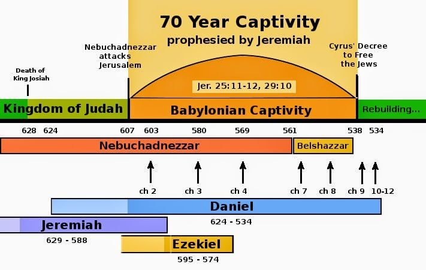
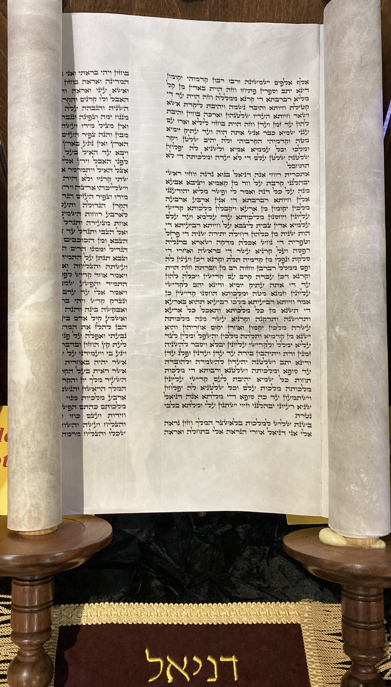

但以理书

- 新约中多次引用，耶稣亲自印证但以理是先知（太24:15）
- 名字意思是「神是我的审判者」（God is my judge），这不仅是他的名字，也是全书宣告的信息：神对一切人和国度施行审判
- 但以理书的主题： 神对人类历史的绝对主权与神国度的最终降临,以“人子”预表基督
- 贯穿全书的深层冲突： 世俗的城（巴比伦/世俗）与上帝的城（锡安/神的国度）之间的对抗 (创3:15)
- 许多神学家视但以理书为旧约的启示录（Apocalyptic literature）
温习（被掳背景）

- 犹大国被巴比伦所灭
- 圣殿被毁
- 百姓被掳至巴比伦
- 神透过但以理预言犹大的复国
- 读：诗篇137
但以理的背景与生平
- 时期： 主前约605-539年（被掳时期）。他从青少年时期一直忠心服事到晚年，经历了巴比伦和波斯帝国的多位君王。
- 历史背景： 南国犹大因持续犯罪，神兴起巴比伦将百姓掳走，圣殿被毁
- 先知呼召： 年轻时被掳至巴比伦宫廷，立志不以王的膳食玷污自己，蒙神赐予解明异象和梦兆的智慧
全书双语与交错结构
- 语言的切换：
- 希伯来文（1:1-2:3，8:1-12:13）与 亚兰文（当时的国际通用语，2:4-7:28）。
- 亚兰文面向列国（外邦人也同样面临神的审判），希伯来文面向余民（神的子民得安慰）
- 2-7章的交错结构 (Chiasmic Structure)：
- 第2与第7章： 四个国度的异象（预言人类历史的兴衰，神国的降临）。
- 第3与第6章： 神对子民的拯救（火窑与狮子坑中的保守）。
- 第4与第5章（中心位置）： 神对世俗君王（尼布甲尼撒与伯沙撒）的审判。这正是但以理名字“神是审判者”的核心体现。
但以理书的中心信息

- 神的绝对主权： 即使耶路撒冷被毁、神的子民被掳，神依然在万国的历史中掌权（但2:47; 3:17-18等）
- 神持守恩典之约： 神藉苦难管教选民，预备他们迎接弥赛亚
- 子民的忠诚： 在异教文化中，真信仰表现为对神毫不妥协的忠心
- 弥赛亚的盼望： 「受膏者」与「人子」必将到来，带来拯救并建立永远的国度
第一部分：历史叙事（第1-6章）
- 核心内容： 神在列国中的主权以及保护祂子民的信实
- 忠心的见证： 但以理与朋友没有向异教妥协，而继续在异国文化中忠心服事神
- 神迹的拯救： 火窑与狮子坑的拯救,彰显神对子民的保护
- 历史走向： 骄傲的世俗君王（如尼布甲尼撒）最终必须降卑，承认至高神在人的国中掌权
第二部分：先知异象（第7-12章）
- 核心内容： 关于未来四个世俗帝国（巴比伦、玛代波斯、希腊、罗马）兴衰的启示
- 对列国的审判： 世俗国度看似强大（如各种兽的异象），但终将被神的国度摧毁
- 预备未来的逼迫： 神预言了安条克·伊皮法尼（Antiochus Epiphanes）等人的迫害，以此鼓励活在逼迫中的神子民
- 最终的拯救： 异象超越了历史的逼迫，直接指向基督的降临与永远和平国度的建立
改革宗对被掳与苦难的理解
- 被掳是以色列持续犯罪违约的惩罚，但是神依然信守对祂子民的恩典之约
- 苦难是暂时的，神透过这些试炼预备子民迎接最终弥赛亚带来的救赎
但以理忠心信仰
| - 立志不玷污自己，持守分别为圣 (但1:8) |
|---|
| - 一日三次，双膝跪下向神祷告如常 (但6:10) |
| - 寻求天上的神指明奥秘的事 (但2:18) |
但以理书中弥赛亚的来临主题
- 但以理的生平是对基督的预表：
- 像约瑟一样，但以理经历被流放、遭遇陷害，却因着神的灵同在而蒙拯救并被高举。
- 他的经历预表了基督“降卑而后升高”的生命模式：死亡是通向生命的道路，十字架是通向得胜的途径。
- 基督在但以理书中的预表（Christ in Daniel）：
- 非人手凿出的石头（但2章）： 预表基督将摧毁一切人类建立的国度，建立充满天下的永恒国度。
- 受膏君（The Anointed One）（但9章）： 预表受膏者将被剪除，为止住罪过、引进永义。
- 人子（The Son of Man）主题：
- 在但以理的异象中，“人子”是一位伟大的大卫后裔君王。
- 祂既是人（真正在人子），又是神（与亘古常在者同得敬拜）。被神高举并代表神在地上永远掌权（但7:13-14）。
新约如何印证但以理的预言
- 耶稣明确表明自己就是那位应验但以理异象的弥赛亚。祂以「人子」自称（如太9:6; 10:23; 12:8），指出祂就是那位被神高举的大卫君王。
- 但以理对被掳后复兴的期盼，在新约中被解释为在基督的第一次和第二次再来中成就。
- 耶稣不仅是成就救恩的“受膏者”，更是最终审判列国、建立永恒公义国度的君王。
结论
- 即使百姓深陷罪恶、国家覆灭、流放异邦，神仍是历史的最高主宰。
- 预言的核心不仅在于揭示未来的苦难，更是为了在逼迫中鼓励神的子民，带来真正的盼望。
- 历史的终点已经确定，基督（人子）将终结所有属地的国度，建立充满公义和平的永远国度。
应用
- 立志守洁： 在现代世俗文化中，像但以理一样在心中坚定立志（Resolved in heart）。
- 即或不然的信心： 在职场或生活中面对信仰逼迫和利益冲突时，相信神的拯救；即使遭遇苦难，也不向世俗的偶像低头。
- 入世却不属世： 在世俗文化中不仅站立得稳，更能活出美好的见证。
- 认识神的子民必刚强行事： 如但以理书11:32所言，真正认识神的人能在异教文化中站立得稳，活出见证。
- 定睛永恒国度： 面对世界局势的动荡，不要绝望，深知“至高者在人的国中掌权”。
讨论问题
- 但以理和他的三个朋友在异教宫廷中面临了哪些文化同化和信仰上的挑战？这与我们在现代社会（如学校、职场）中面临的挑战有什么相似之处？
- 在面临火窑的烈火时，但以理的朋友宣告了他们对神的信心（但3:18）。在你的生活中，当神的带领与你期望的“拯救”不符时，你该如何活出这种顺服的信心？
- 知道神在历史中拥有绝对主权，甚至掌管那些看似邪恶和强大的政权，这如何改变你看待当今世界局势与个人困境的心态？